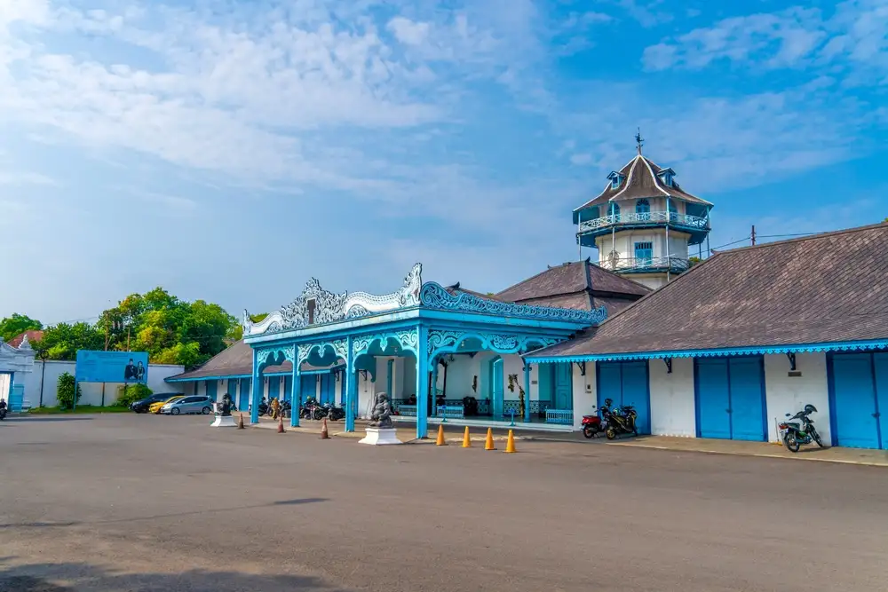
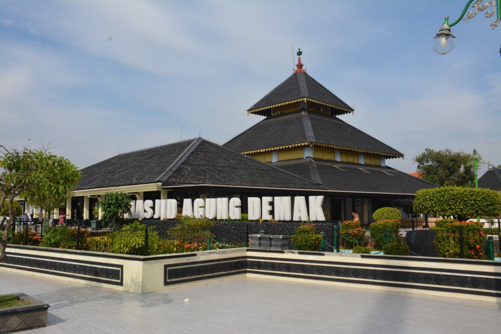

Tourism in Central Java
 UNESCO
UNESCO
Borobudur Temple
The world's largest Buddhist temple, built in the 8th century AD. A breathtaking architectural wonder featuring 2,672 relief panels and 504 Buddha statues.
 Nature
Nature
Dieng Plateau
A volcanic highland with colorful lakes, ancient Hindu temples, and a land above the clouds. Indonesia's finest potato-growing region.
 Marine
Marine
Karimunjawa Islands
A marine paradise with 27 small islands, stunning coral reefs, and crystal-clear blue waters. Central Java's premier snorkeling and diving haven.

Surakarta Palace
A magnificent center of Javanese culture, home to a collection of art and culture from the Islamic Mataram Kingdom of immense historical value.

Mount Merapi
Indonesia's most active volcano with spectacular scenery. Jeep lava tours are available to explore the remnants of past eruptions.

Demak Grand Mosque
The oldest mosque in Java, a symbol of the spread of Islam in the archipelago. Built by the Wali Songo with a distinctive Javanese architectural style.